地政学
カストリーズは東カリブの小国首都として、港、政府、外交窓口を担います。フランス語圏島嶼と英語圏制度の間で、気候、観光、債務、安全保障、地域統合を扱う実務都市です。海の交渉も近いです。島外連絡も命綱です。
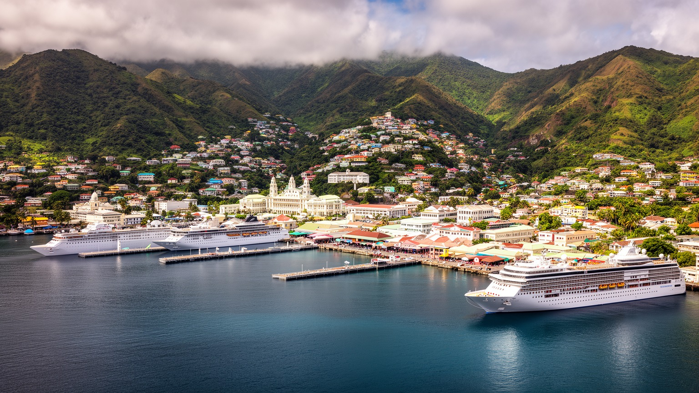
🇱🇨 セントルシア / カリブ海東部 / World City Atlas
深い入り江の天然港を中心に、政府機関、中央市場、フェリー、クルーズ船、丘陵住宅、教会、学校、商店街が集まる小さな島国の首都です。
都市の骨格
カストリーズはセントルシア北西岸の天然港を中心に広がります。港湾、商店街、中央市場、官庁、学校、丘の住宅地が近く、クルーズ観光と住民の日常が同じ狭い都市面で交差します。
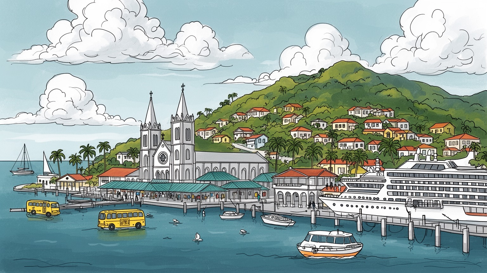
カストリーズは東カリブの小国首都として、港、政府、外交窓口を担います。フランス語圏島嶼と英語圏制度の間で、気候、観光、債務、安全保障、地域統合を扱う実務都市です。海の交渉も近いです。島外連絡も命綱です。
雇用は観光、行政、港湾、小売、教育、交通、建設、金融に支えられます。クルーズ客の増減と輸入物価は、商店、露店、タクシー、若者の仕事に直結します。技能訓練も重いテーマです。学校帰りの買い物も見えます。
カトリック大聖堂、学校、教会行事、クレオール語、カーニバル、魚料理、音楽が首都の記憶を作ります。ラジオやSNSの告知、スポーツの話題も、祈りと祭礼を日常へ結びます。夜の音も街を包みます。家族も集います。
旅行者は港、市場、丘の展望、近郊のビーチへ向かいます。住民には通勤、坂道、家賃、学校、介護、ハリケーン、物価が現実です。雨の匂い、海風、バスの声が島の日々を刻みます。子どもの通学も毎朝続いています。
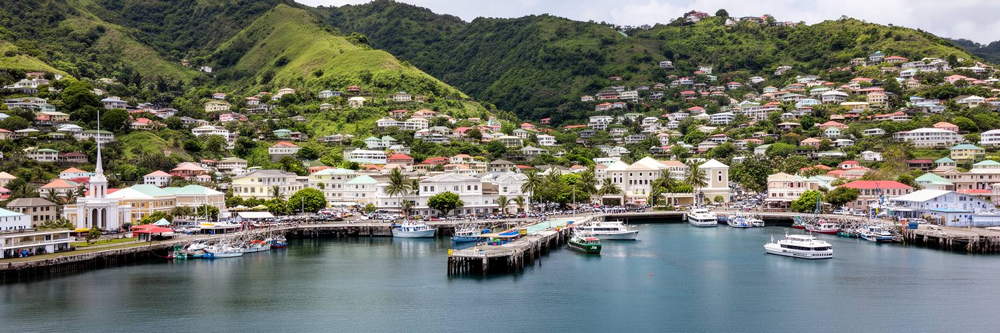
カストリーズは、深く入り込んだ湾を持つ天然港によって首都になった都市です。湾は外洋の荒さから守られ、船、フェリー、クルーズ、貨物、漁船を受け止めます。市街地は広い平野ではなく、港に近い低地と背後の丘に分かれて広がり、官庁、商店街、中央市場、学校、教会、バスターミナルが短い距離に集まります。地図で見ると小さな点のようですが、島国の行政と物流の多くがここを通ります。食料や建材、燃料、観光客、郵便、政策の決定が同じ港湾都市の中で交差するため、港の混雑や道路の渋滞は生活の問題にもなります。海に近い美しさは、同時に高潮、強雨、排水、斜面崩壊への備えを求めます。火災や台風で街が傷ついてきた記憶もあり、中心部の再建は都市の姿を何度も変えてきました。湾岸の道路が混むと、港だけでなく学校や市場、病院への移動も遅れます。カストリーズを読むには、港を単なる景色ではなく、国家の玄関、雇用の場、防災の前線、住民の日常動線として見る必要があります。丘から湾を見下ろす眺めは、首都の機能が限られた土地に折り重なっていることをよく示します。朝の荷下ろし、昼の役所通い、夕方の帰宅が同じ道路に集中するため、小さな湾岸都市の密度が体で分かります。港をどう使い、どう守るかが、首都全体の使いやすさを決めています。湾は都市の骨格です。
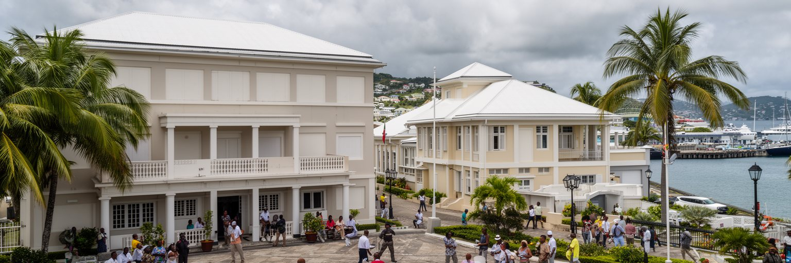
セントルシアの政治と行政は、カストリーズの小さな中心部に濃く集まります。首相府、議会、省庁、裁判、警察、港湾管理、学校、報道、政党の活動が近い距離で動き、政策の決定は住民の通勤や商いのすぐ隣で行われます。大国の首都のような巨大官庁街はありませんが、観光、災害対応、教育、医療、漁業、財政、債務、外交を扱う機能は重いです。セントルシアは東カリブ諸国機構やカリブ共同体の枠組みで協調し、気候資金、航空路、治安、保健、移民、投資をめぐる実務を進めます。カストリーズでは国際会議の言葉と、バスを待つ人や市場で働く人の生活が近くにあります。小国の政治は顔が見えやすい一方で、限られた財政と人材の中で迅速な判断を求められます。選挙の熱気や公務員の仕事は、広場、ラジオ、学校、教会を通じて家族の会話にも入ります。予算の使い道は、港湾整備、学校修理、医療、人材育成、防災の優先順位として見えてきます。ハリケーン後の復旧、道路の修理、学校の整備、観光市場の変化は、抽象的な政策ではなく日々の暮らしに戻ってきます。首都の役割は、島の外から来る圧力を住民の安全へ変える制度を保つことです。小さな行政都市だからこそ、透明性、説明責任、公共サービスの信頼が社会の安定に直結します。役所の距離が近い分、住民の期待も厳しくなります。
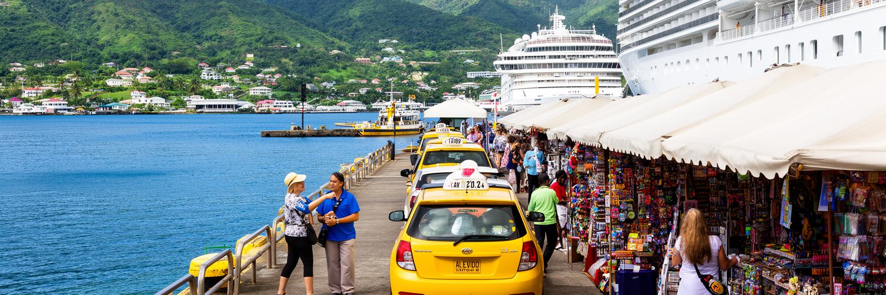
カストリーズの経済を大きく左右するのは観光です。クルーズ船が入る日には、港の周辺にタクシー、ガイド、土産物店、飲食、警備、清掃、両替、ツアー手配の仕事が一気に増えます。運転手の呼び声、車のクラクション、港風に混じる焼き魚やスパイスの匂いが、寄港日の中心部を変えます。旅行者は短い滞在で中央市場や大聖堂、丘の展望、近郊のビーチ、ピトン山方面のツアーへ向かいます。しかしクルーズ観光は、滞在時間が短く、支出が港周辺や契約事業者に偏りやすい面もあります。店主や運転手にとっては重要な収入源ですが、船が来ない日や悪天候、世界景気、航空便の変化で収入は揺れます。観光地としての明るいイメージの背後では、季節雇用、低賃金、物価上昇、交通混雑、公共空間の使い方が課題になります。港湾の免税店やツアーバスだけが利益を吸い上げると、中心部の小さな食堂や市場の売り手には成長が届きません。観光の成功は、訪問者数だけでなく、収入が地元の小商い、若者の技能、文化活動、道路や市場の改善に届くかで測られます。カストリーズにとってクルーズ港は世界とつながる窓ですが、都市全体が一日客だけのために作られると、住民の生活は見えにくくなります。旅の楽しさと暮らしの安定を両立させることが、首都観光の核心です。滞在客を増やし、街歩きの質を上げることも、観光収入を広く残す方法になります。地元の案内人や小店が評価される仕組みも欠かせません。
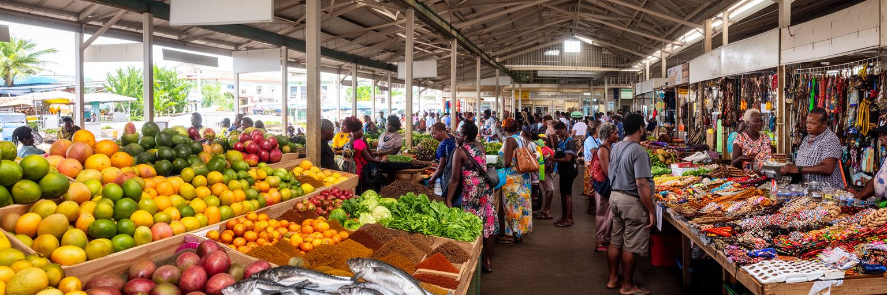
カストリーズ中央市場は、観光名所である前に島の台所です。野菜、果物、魚、香辛料、手工芸品、食事、日用品が並び、農村、漁村、輸入業者、家庭、レストラン、ホテルを結びます。売り手は早朝から商品を整え、客は価格や鮮度を見ながら買い、観光客は色彩や香りに引き寄せられます。グリーンフィグ、塩魚、ココナツ、辛いソース、焼き菓子の匂いが通路に混じり、子ども連れや高齢者の買い物、昼食を急ぐ公務員の列が市場のリズムを作ります。市場はセントルシアの農業や漁業が首都に届く場所であり、同時に多くの小規模労働が現金収入を得る場所です。観光向けの土産販売が増えるほど、地元向けの価格、通路、衛生、保管、廃棄物、交通の問題も調整が必要になります。市場周辺ではバスやタクシーが集まり、歩道の混雑や排水、暑さ、雨よけ、治安が買い物のしやすさを左右します。観光写真では活気だけが切り取られますが、実際には仕入れのリスク、天候、輸入物価、燃料費、家計の節約が日々の会話にあります。台風や道路不通で入荷が遅れると、売り場の価格と家庭の献立はすぐに変わります。市場を良くすることは、きれいに見せることだけではありません。地元の食の流通、女性の商い、若者の仕事、観光の収入を同時に守る都市政策です。中央市場を歩くと、カストリーズが島全体の暮らしを集めていることが分かります。常連客との信用や小さな掛け売りも、統計に出にくい生活の支えです。市場が健全なら、首都の物価感覚も保たれます。
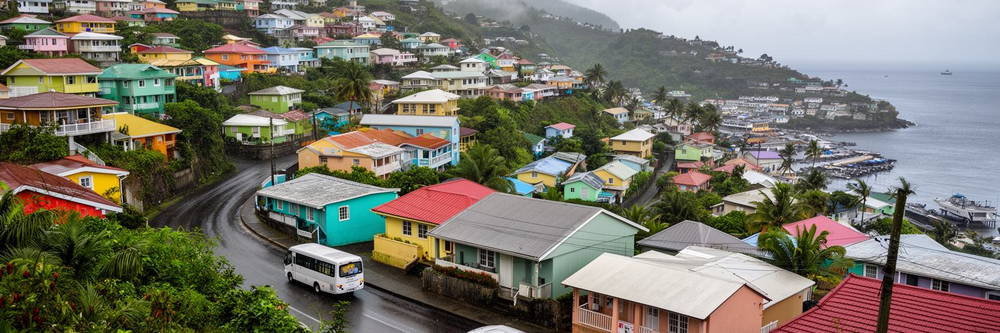
カストリーズの住まいは、港の低地だけでなく背後の丘へ伸びています。丘の住宅地からは湾と市街地を見下ろせますが、日常生活では坂道、バスの本数、道路の幅、雨の日の滑りやすさ、斜面の安全が重要になります。中心部に近い仕事や学校へ向かう人は、朝夕の道路混雑、駐車、乗り換え、徒歩の暑さに向き合います。雨上がりの湿った土の匂い、坂を上がる車の音、夕方に聞こえるラジオや近所の音楽も、丘の暮らしの一部です。観光客に見える美しい眺望の裏側には、住宅費、土地の相続、建設規制、排水、ゴミ収集、街灯、医療へのアクセスがあります。島の土地は限られているため、良い場所は住宅、ホテル、商業、公共施設の間で競合します。家族が近くに住み、親族の支援で子育てや介護を行う一方で、若者は仕事や家賃のために国外や島内の別地域へ動くこともあります。坂道の都市では、車を持つ世帯と持たない世帯の差が生活時間に表れます。雨で道路が傷むと、通勤だけでなく救急、通学、食料の買い出しにも影響します。高齢者や子どもにとって、歩道や照明、公共交通は安全を左右します。カストリーズの都市形成を読む時、港の華やかさだけでは不十分です。丘の家々から中心部へ降りる毎日の移動が、首都の労働、教育、家族の時間を支えています。住宅政策は景観ではなく、坂道で暮らす人の足元を整える仕事でもあります。安全な斜面と手頃な住まいは、首都で働く権利に近いテーマです。眺めの良さと生活の便利さは同じではありません。
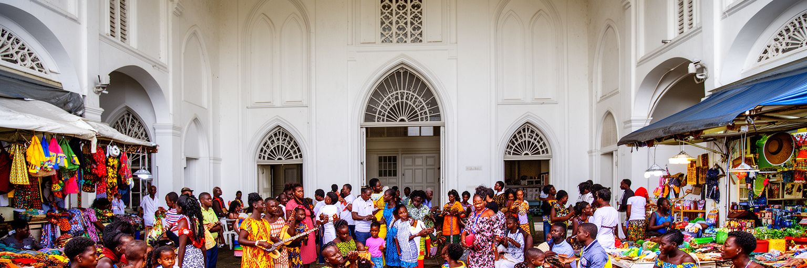
カストリーズの文化は、カトリックの歴史、教会学校、クレオール語、カーニバル、音楽、料理、家族の集まりに表れます。中心部の大聖堂や周辺の教会は、礼拝だけでなく教育、葬儀、結婚、慈善、地域の相談を支えてきました。セントルシアはイギリスとフランスの支配が交替した歴史を持ち、英語の制度とフランス系クレオールの言葉や地名が重なります。アフリカ系住民の記憶、プランテーション、解放後の暮らし、カリブの音楽、近隣島との往来は、首都の日常文化を厚くしています。市場の食堂、学校行事、日曜の礼拝、カーニバルの準備、ラジオの音楽は、都市を制度の中心から生活の場へ戻します。夜にはソカやダンスホール、ジャズの催しが港町の空気を変え、SNSは祝祭、教会活動、クリケットやサッカーの結果を家族の会話へ運びます。一方で、文化は観光商品として消費されやすく、演じる人の収入や権利が十分に守られない場合もあります。家庭の台所で作られる料理や、近所で交わされるクレオール語は、舞台の外で文化を生かし続けます。クレオール文化を大切にすることは、古い言葉を飾るだけではありません。教育、メディア、音楽、食、地域活動の中で、住民が自分の歴史を誇りを持って語れるようにすることです。カストリーズの魅力は、港の景色と同じくらい、祈り、言葉、音、食卓が日々結び直されるところにあります。観光客がその厚みを尊重して出会えるかも、都市の品格を左右します。
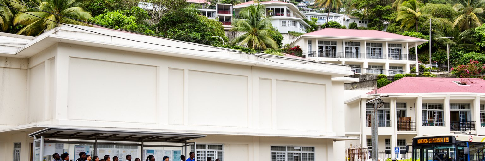
カストリーズには学校、専門教育、政府機関、図書館、教会系施設、職業訓練の場が集まり、若者の進路を大きく左右します。島国では人口規模が小さいため、一人ひとりの技能が公共サービス、観光、金融、医療、教育、建設、情報技術を支えます。観光業は多くの入口を用意しますが、季節性や賃金の低さだけに頼ると、若者は将来を描きにくくなります。英語力、接客、会計、整備、船舶、調理、デジタル技能、防災、保健の訓練が、首都の仕事の質を上げます。同時に、失業、移民、治安、薬物、家庭の負担、交通費は若者の選択を狭めます。学校へ通う道の安全、放課後の居場所、スポーツや音楽の機会も都市の重要な基盤です。港やホテルで働く親の時間、海外にいる親族からの送金、教会やクラブの支援も、若者の学びを支えます。海外で学ぶ人や働く人が多い社会では、送金や経験が島に戻ることもありますが、優秀な人材が出ていく不安もあります。カストリーズの教育政策は、単に試験結果を上げるだけではなく、若者が島に残っても外へ出ても尊厳ある仕事を選べるようにすることです。小さな首都だからこそ、学校、職場、家庭、教会、地域クラブの結びつきが、都市の未来を具体的に形づくります。若者が公共空間で安心して過ごせることも、都市の投資です。学びの機会は観光依存を和らげる力にもなります。
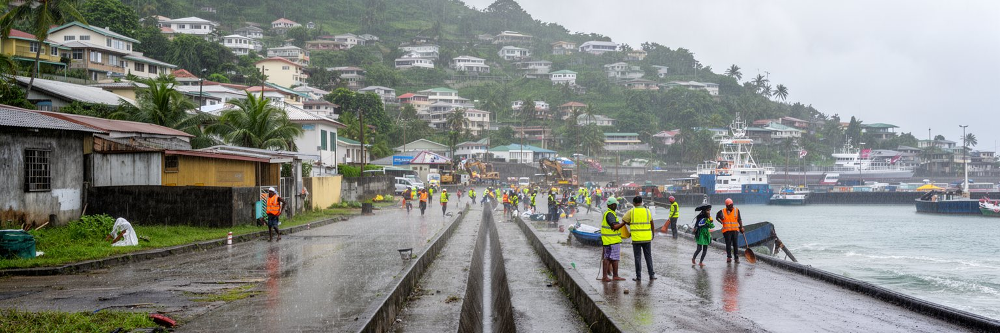
カストリーズは熱帯の美しい港町であると同時に、気候リスクの前線にあります。ハリケーン、強雨、高潮、斜面崩壊、港湾施設の被害、停電、断水、道路寸断は、観光、行政、学校、病院、商店を一度に止める可能性があります。湾に近い低地では排水が重要で、丘の住宅地では斜面の管理や雨水の流れが安全を左右します。災害は自然現象だけではなく、貧困、住宅の弱さ、保険の有無、移動手段、情報へのアクセスによって被害が変わります。クルーズ港やホテルを守る防災と、住民の家、学校、市場を守る防災が別々に進むと、都市の公平性は損なわれます。気候変動で海面上昇や激しい雨が懸念されるなか、小さな島国の首都には限られた財源で優先順位を決める難しさがあります。排水路の清掃、建築基準、避難所、早期警報、斜面の緑、港の復旧計画、通信の冗長性は地味ですが欠かせません。家庭ごとの備蓄、近所の連絡網、学校での訓練も、行政だけでは届かない隙間を埋めます。観光客が安心して訪れる都市であるためにも、まず住民が災害後に学校へ戻り、市場を開き、仕事へ行けることが必要です。カストリーズの防災は、港の経済と地域の暮らしを同時に守る都市運営です。美しい湾を守ることは、収入と命の両方を守ることです。復旧の速さは、島全体の信頼にもつながります。備えは日常の管理から始まります。
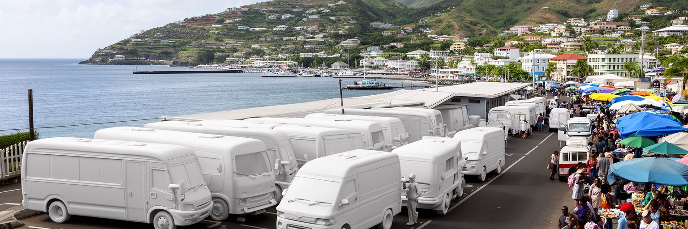
カストリーズは島内交通の結節点です。各地区から来るミニバス、タクシー、貨物車、通勤車、学校へ向かう子ども、観光ツアーの車両が中心部に集まります。セントルシアは山がちな島で、海岸沿いの道路や峠道が地域をつなぎます。そのため、道路の状態、燃料費、バスの本数、雨や事故による遅れは、通勤、通学、医療、農産物の出荷、観光ツアーに直接影響します。首都に仕事や行政手続き、病院、学校が集中するほど、遠い地区の住民は移動時間と費用を負担します。カストリーズの中心部だけを整えても、島全体から安全に来られなければ首都機能は十分に働きません。農村や漁村の産品が市場へ届き、学生が授業に間に合い、患者が診療を受け、観光客が各地へ分散するには、道路と公共交通の信頼性が重要です。交通政策は観光の効率化だけでなく、地域格差を縮める手段でもあります。朝の混雑や帰宅時の待ち時間は、家族の夕食、宿題、休息の時間にも響きます。バス停の日陰、待合空間、歩道、照明、料金の分かりやすさは、小さく見えて生活の質を大きく変えます。カストリーズを読むことは、首都に集まる力だけでなく、島の各地域が首都へどうつながるかを読むことでもあります。道路網が強くなるほど、首都の利益も各地域へ戻りやすくなります。移動の公平さが島の一体感を支えています。
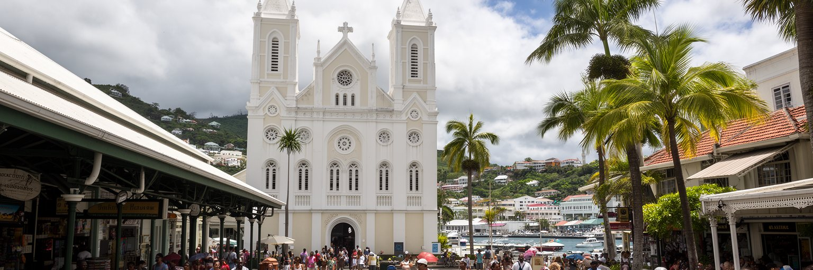
カストリーズの観光は、ビーチだけでなく都市散策にも価値があります。港から歩けば、中央市場、デレク・ウォルコット広場、大聖堂、商店街、公共施設、丘へ向かう道が近い距離にあります。ノーベル文学賞作家の名を持つ広場や、植民地期からの宗教建築、クレオールの食、バスの行き交う通りは、セントルシアの歴史を日常の中に置いています。短時間のクルーズ客にも歩きやすい都市であるには、案内、日陰、横断、清潔なトイレ、治安、休憩場所、押し売りへの不安を減らす運営が必要です。同時に、街を観光向けに整えすぎると、住民の商い、通勤、買い物が脇へ追いやられることがあります。都市遺産は建物だけではなく、市場の声、教会の鐘、バスの呼び込み、丘からの景色、海風、クレオール語の響きまで含みます。火災や再建を経て残った記憶をどう伝えるかも、街歩きの質を左右します。修復や案内板、歩道整備が進めば、観光客はビーチへ急ぐ前に首都を理解できます。地元ガイド、工芸品、食堂、音楽、学校の歴史教育がつながると、観光収入は文化の継承にも役立ちます。カストリーズを歩く旅は、小さな首都が島の記憶をどのように集め、見せ、日々使っているかを知る入口です。住民の生活が続く街として見るほど、観光は深くなります。写真を撮るだけでなく、買い物や会話に時間を使う旅が似合います。
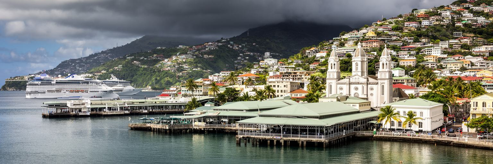
カストリーズは人口規模では小さな都市ですが、世界都市を考えるための論点が凝縮されています。天然港、島国の行政、クルーズ観光、輸入物流、中央市場、丘陵住宅、宗教、クレオール文化、気候リスク、地域交通が、限られた土地に重なります。国際金融の高層街や巨大空港を持つ都市とは違い、ここでは世界との接続が船、航空、観光、気候資金、移民、送金、災害復旧として現れます。小さな首都の強さは、顔の見える距離で制度と生活がつながることです。一方で、その近さは脆さにもなります。港が止まれば物資が遅れ、観光が落ち込めば収入が減り、強雨が来れば道路と市場が混乱します。都市の未来は、観光の華やかさを住民の教育、住宅、交通、防災、文化の継承へ変えられるかにかかっています。カストリーズを歩くと、湾を見下ろす美しさ、商店街の混雑、教会の静けさ、バスの呼び声、丘の家々が一つの都市として結びついていることが分かります。そこでは、国の統計に出るGDPと、朝の市場で交わされる小銭の重みが同じ都市の現実です。世界性は大きさだけではありません。外から来る資金、人、気候変動、観光需要を、島の暮らしにどう翻訳するかという実務の中にあります。小さな港湾首都を丁寧に見ることは、島国が世界経済と気候危機をどう受け止めるかを見ることでもあります。